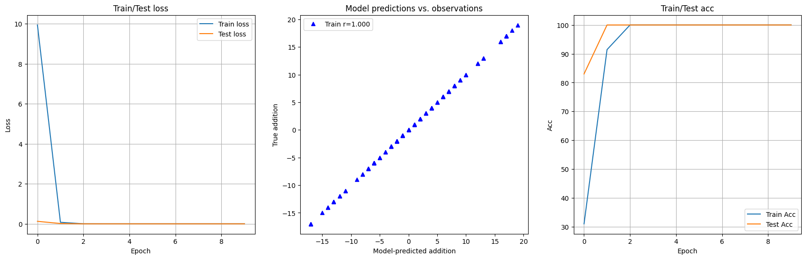

My adding machine
Briefly, I trained with pairs of numbers, the numbers where normalized to work always with small values, and during training, the target labels where the sum of these 2 numbers
What was curious is that if in the following line of the code: "labels_np=np.sum(data_np, axis=1)" (line 13) you change sum by mul then the labels are now a multiplication of these pair of numbers and the net now learns how to multiply, you can try it.
import numpy as np
import torch
import torch.nn as nn
import torch.nn.functional as F
from torch.utils.data import DataLoader,TensorDataset
from sklearn.model_selection import train_test_split
import sklearn.metrics as skm
import matplotlib.pyplot as plt
from IPython import display
from matplotlib_inline.backend_inline import set_matplotlib_formats
data_np = np.random.randint(-10, 11, size=(1000,2))
dataNorm = data_np / np.max(data_np)##
labels_np=np.sum(data_np, axis=1)
dataTensor = torch.tensor(dataNorm).float() ## dataTensor = torch.tensor(data_np).float()
labelsTensor = torch.tensor(labels_np).float()
labelsTensor=labelsTensor[:,None]
# use scikitlearn to split the data
train_data,test_data, train_labels,test_labels = train_test_split(dataTensor, labelsTensor, test_size=.1)
# then convert them into PyTorch Datasets (note: already converted to tensors)
train_dataDataset = TensorDataset(train_data,train_labels)
test_dataDataset = TensorDataset(test_data,test_labels)
# finally, translate into dataloader objects
batchsize = 20
train_loader = DataLoader(train_dataDataset,batch_size=batchsize,shuffle=True,drop_last=True)
test_loader = DataLoader(test_dataDataset,batch_size=test_dataDataset.tensors[0].shape[0])
# create a class for the model
def createTheAddNet():
class addNet(nn.Module):
def __init__(self):
super().__init__()
### input layer
self.input = nn.Linear(2,40)
### hidden layer
self.fc1 = nn.Linear(40,40)
self.fc2 = nn.Linear(40,40)
### output layer
self.output = nn.Linear(40,1)
# forward pass
def forward(self,x):
x = self.input(x)
x = self.fc1(x)
x = self.fc2(x)
return self.output(x)
# create the model instance
net = addNet()
# loss function
lossfun = nn.MSELoss()
# optimizer
optimizer = torch.optim.Adam(net.parameters(),lr=.01)
return net,lossfun,optimizer
# a function that trains the model
# global parameter
numepochs = 10
def trainTheModel():
# create a new model
net,lossfun,optimizer = createTheAddNet()
# initialize losses
trainAcc=[]
testAcc=[]
trainLoss = torch.zeros(numepochs)
testLoss = torch.zeros(numepochs)
# loop over epochs
for epochi in range(numepochs):
# switch on training mode
net.train()
# loop over training data batches
batchAcc=[]
batchLoss = []
for X,y in train_loader:
# forward pass and loss
yHat = net(X)
loss = lossfun(yHat,y)
# backprop
optimizer.zero_grad()
loss.backward()
optimizer.step()
# loss from this batch
batchLoss.append(loss.item())
#compute accuracy
accOfBatch=(yHat.round()==y).float()
#accOfBatch=(np.round(yHat,2)==y).float()
accOfBatchPercentage=100*torch.mean(accOfBatch)
batchAcc.append(accOfBatchPercentage)
# and get average losses across the batches
trainLoss[epochi] = np.mean(batchLoss)
#accuracy of each epoch
trainAcc.append( np.mean(batchAcc) )
# test accuracy
net.eval()
X,y = next(iter(test_loader)) # extract X,y from test dataloader
with torch.no_grad(): # deactivates autograd
yHat = net(X)
accOfTest=(yHat.round()==y).float()
#accOfTest=(np.round(yHat,2)==y).float()
accOfTestPercentage=100*torch.mean(accOfTest)
testAcc.append(accOfTestPercentage)
testLoss[epochi] = lossfun(yHat,y).item()
# function output
return trainLoss,testLoss,trainAcc,testAcc,net
trainLoss, testLoss, trainAcc, testAcc, theNet = trainTheModel()
# plot some results
fig,ax = plt.subplots(1,3,figsize=(21,6))
ax[0].plot(trainLoss,label='Train loss')
ax[0].plot(testLoss,label='Test loss')
ax[0].set_title('Train/Test loss')
ax[0].set_xlabel('Epoch')
ax[0].set_ylabel('Loss')
ax[0].legend()
ax[0].grid()
# show predictions and real values
yHatTrain = theNet(train_data)
yHatTest = theNet(test_data)
#ax[1].plot(yHatTrain.detach(),train_labels,'ro')
ax[1].plot(yHatTest.detach(),test_labels,'b^')
ax[1].set_xlabel('Model-predicted addition')
ax[1].set_ylabel('True addition')
ax[1].set_title('Model predictions vs. observations')
# correlations between predictions and outputs
corrTrain = np.corrcoef(yHatTrain.detach().T,train_labels.T)[1,0]
corrTest = np.corrcoef(yHatTest.detach().T, test_labels.T)[1,0]
ax[1].legend([ f'Train r={corrTrain:.3f}',f'Test r={corrTest:.3f}' ])
#accuracy
ax[2].plot(trainAcc,label='Train Acc')
ax[2].plot(testAcc,label='Test Acc')
ax[2].set_title('Train/Test acc')
ax[2].set_xlabel('Epoch')
ax[2].set_ylabel('Acc')
ax[2].legend()
ax[2].grid()
print(100*torch.mean((((yHatTest.round()-test_labels).abs())<3).float()))
plt.show()